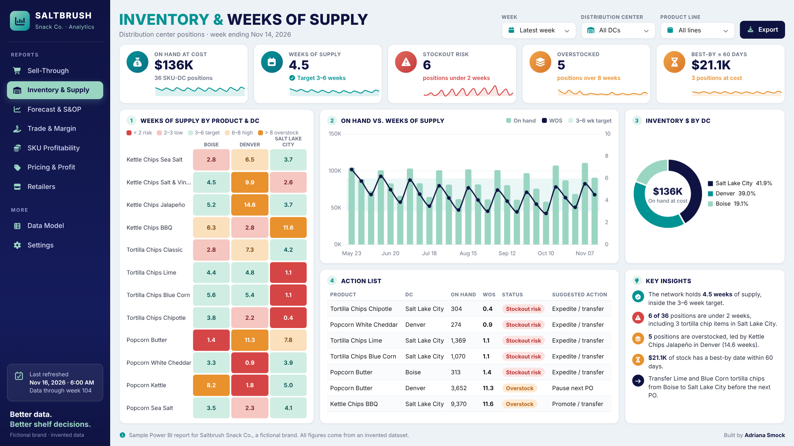

Power BI sample · Operations · Distribution centers
Which products are about to run out, which are sitting too long, and what should the planner do this week? This report tracks on-hand inventory against demand at three distribution centers.
Saltbrush Snack Co. is a fictional brand. Every number on this page comes from an invented dataset, not from an employer or client.
The network sits at 4.5 weeks of supply, inside the 3–6 week target, but that average hides 6 positions at stockout risk, including three tortilla chip items in Salt Lake City, and 5 overstocked positions. The action list turns those into transfers, expedited POs or paused orders.
A star schema: one fact table with the numbers, and dimension tables for filtering. Relationships are one-to-many from each dimension to the fact table on its ID or key column.
| Table | Contents |
|---|---|
fact_dc_inventory | Week × DC × SKU: on hand, shipped, 4-week average demand, oldest lot best-by date |
dim_week | Week ending, year, month, fiscal week |
dim_product | SKU, product, product line, unit cost |
dim_dc | Distribution center and city |
-- Inventory is a snapshot, so every measure looks at the latest week in context
On Hand Units =
VAR LastWk = MAX ( dim_week[WeekEnding] )
RETURN CALCULATE ( SUM ( fact_dc_inventory[OnHandUnits] ), dim_week[WeekEnding] = LastWk )
Avg Weekly Demand =
VAR LastWk = MAX ( dim_week[WeekEnding] )
RETURN CALCULATE ( SUM ( fact_dc_inventory[AvgWeeklyDemand] ), dim_week[WeekEnding] = LastWk )
Weeks of Supply = DIVIDE ( [On Hand Units], [Avg Weekly Demand] )
Inventory $ at Cost =
VAR LastWk = MAX ( dim_week[WeekEnding] )
RETURN
SUMX (
FILTER ( fact_dc_inventory, fact_dc_inventory[WeekEnding] = LastWk ),
fact_dc_inventory[OnHandUnits] * RELATED ( dim_product[UnitCost] )
)
Stock Status =
SWITCH ( TRUE (),
ISBLANK ( [Weeks of Supply] ), BLANK (),
[Weeks of Supply] < 2, "Stockout risk",
[Weeks of Supply] > 8, "Overstock",
"Healthy" )
Stockout Risk Positions =
COUNTROWS (
FILTER (
CROSSJOIN ( VALUES ( dim_product[SKU] ), VALUES ( dim_dc[DCID] ) ),
NOT ISBLANK ( [Weeks of Supply] ) && [Weeks of Supply] < 2
)
)
Best-By ≤ 60 Days $ =
VAR LastWk = MAX ( dim_week[WeekEnding] )
RETURN
SUMX (
FILTER ( fact_dc_inventory,
fact_dc_inventory[WeekEnding] = LastWk
&& fact_dc_inventory[OldestLotBestBy] <= LastWk + 60 ),
fact_dc_inventory[OnHandUnits] * RELATED ( dim_product[UnitCost] )
)Download the CSV files to rebuild this report: fact_dc_inventory.csv · dim_week.csv · dim_product.csv · dim_dc.csv, or get all sample files (.zip).